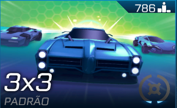
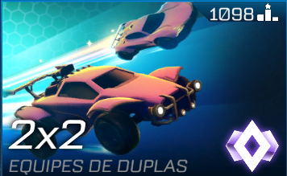
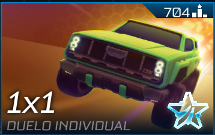
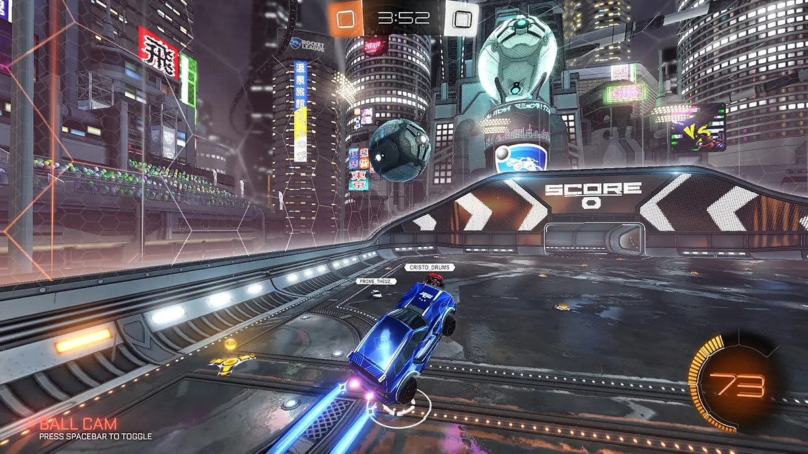
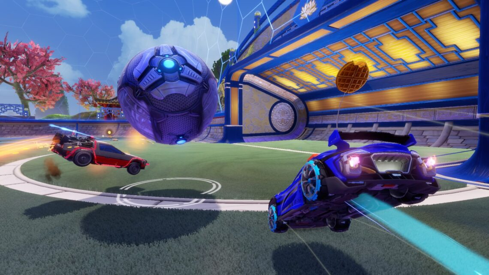

01
Trios 3v3
Com três jogadores em cada equipe. Posicionamento e comunicação fazem diferença.
Muito mais que futebol com carros.
Um espaço para apresentar um dos meus hobbies, conhecer melhor o jogo e compartilhar um pouco da minha experiência dentro das arenas.
Uma mistura de velocidade, habilidade e estratégia em partidas eletrizantes com carros movidos a Boosts e movimentações insanas.

Rocket League é um jogo competitivo em que os jogadores controlam carros movidos a foguete para acertar uma bola gigante e marcar gols. As partidas acontecem em arenas fechadas, geralmente com duas equipes disputando durante alguns minutos.
O que parece simples no começo ganha profundidade com o domínio do carro, o uso do impulso, os saltos, as jogadas aéreas e, principalmente, a tomada de decisões em equipe.
Atualmente, Rocket League se destaca pelo cenário competitivo, pela variedade de personalizações e pela necessidade de desenvolver habilidades como precisão, posicionamento, rotação e trabalho em equipe.
Mais do que explicar o jogo, esta parte conta por que ele se tornou um dos meus hobbies.

Descobri esse jogo por meio de vídeos no YouTube, firewall154, jatozord, entre outros. Foram esses vídeos que me despertaram o interesse pelo jogo, além de ser uma mistura de futebol e carros, o que poderia dar errado. Quando ele se tornou gratuito, comecei a jogar offline, mas consegui jogar os modos competitivos apenas 1 ano depois. Como jogava no console (Xbox), os jogos free-to-play, mesmo gratuitos para download, ainda necessitavam de uma assinatura online. No dia 21 de abril de 2021, essa prática foi extinta da plataforma Xbox, possibilitando a minha entrada nos modos ranqueados online.
Parei de jogar por um tempo depois de alcançar o ranking Champion, que era meu principal objetivo no jogo. Durante essa trajetória, fiz muitas amizades, aprendi diversas mecânicas e desenvolvi minhas habilidades. Ao todo, acumulei mais de 655 horas de jogo, contabilizadas pela rede Xbox. Apesar de parecer simples à primeira vista, Rocket League é um jogo bastante difícil de dominar e exige muita dedicação para evoluir, principalmente nos rankings mais altos. Em 2026, decidi voltar a jogar, dessa vez no computador. Consegui recuperar as mecânicas que já havia aprendido e retomar meu desempenho, voltando ao ranking Champion, onde havia parado.
Uma das minhas maiores dificuldades foi evoluir nas mecânicas e aprimorar minhas próprias habilidades, que ainda precisavam de bastante prática. Como eu jogava principalmente o modo 2v2, meu desempenho não dependia apenas de mim, mas também do meu companheiro de equipe. Nem sempre eu ou meu parceiro conseguíamos jogar bem, e isso acabava dificultando nosso progresso nas partidas e a evolução nos rankings.
Cada formato exige uma leitura diferente da partida e uma combinação própria de habilidade e estratégia.

Com três jogadores em cada equipe. Posicionamento e comunicação fazem diferença.

Um equilíbrio entre apoio e iniciativa. Cada jogador precisa participar bastante das jogadas.

Um confronto individual em que controle de bola, paciência e decisões são colocados à prova.

Experiências alternativas, como Rumble, Basquete, Hóquei, Dropshot e Heatseeker. Alguns modos extras aparecem por tempo limitado, em eventos ou parcerias.
Aprender os fundamentos é só o começo. A evolução vem com treino, consistência e prática.

Usar o pulo e o impulso para alcançar a bola no ar.
Manter a bola controlada sobre o carro e preparar uma jogada.
Conduzir a bola pelo ar com toques consecutivos.
Double Tap é uma jogada aérea em que o jogador rebate a bola na parede ou no teto do gol e acerta um segundo toque para marcar.
Aproveitar o movimento do carro para ganhar velocidade.
O sistema competitivo organiza os jogadores de acordo com o desempenho nas partidas ranqueadas. A classificação também utiliza pontos para determinar o nível dos adversários: quanto mais alto o ranque, mais fortes tendem a ser os oponentes.
Levei quase 4 anos para conseguir chegar neste ranking.
Alguns detalhes que ajudam a entender melhor o universo de Rocket League.
O jogo é fácil de entender, mas dominar seus movimentos e mecânicas exige bastante prática. Não tente começar pelo avançado, evolua conforme você joga. Abra os tópicos para descobrir alguns conceitos.

Alguns prints do jogo

Se não quer se estressar, nem jogue.